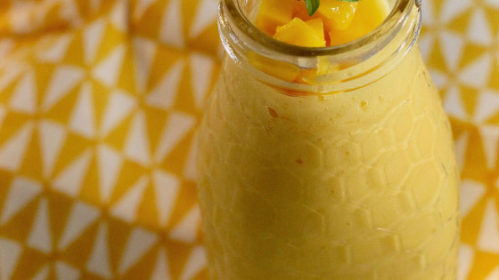

Summertime Mango Drink
Discription
a refreshing burst of tropical goodness in every sip.
Made from sun-ripened, juicy mangoes, this vibrant drink delivers the
perfect balance of natural sweetness and tangy citrus undertones.
Ingredients
- 2 ripe mangoes, cut into cubes
- 1 cup ice cubes
- 1 teaspoon vanilla extract
- 1 tablespoon white sugar, or to taste
- 1 ⅔ cups milk
Steps
- Combine mangoes, ice cubes, vanilla extract,
and sugar in a blender.
- Pour in milk.
- Blend until smooth and serve.